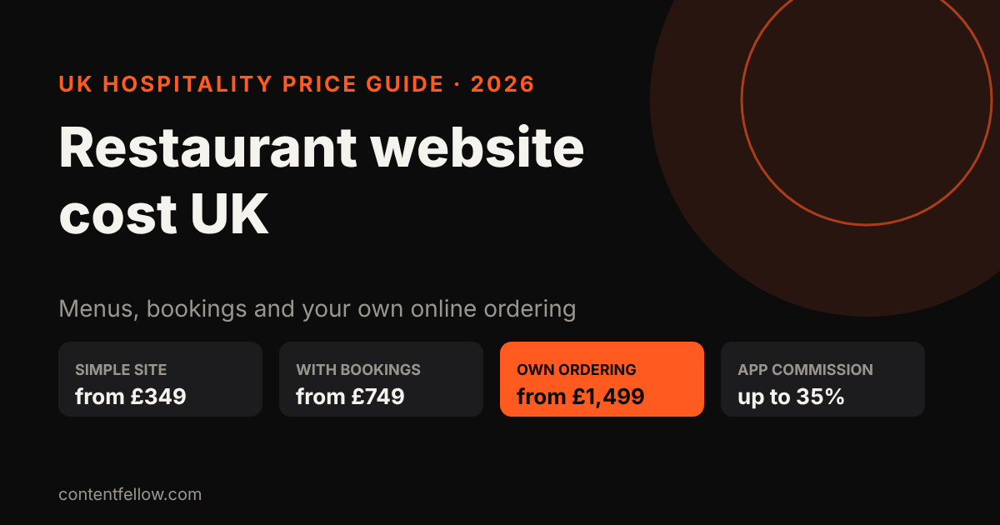
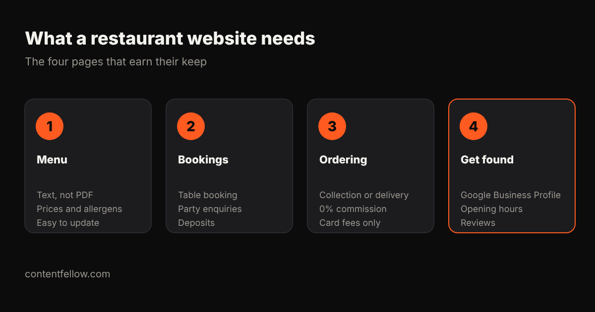

Restaurant and Café Website Cost UK: What You'll Pay in 2026
Quick answer: A UK restaurant or café website costs about £349 to £750 for a simple site with menu and contact details, £749 to £1,500 with table bookings, and £1,499 to £3,000 with your own online ordering. Your own ordering costs only card fees per order, compared with 30–35% commission on full-service delivery apps like Deliveroo. (October 2026.)

How much does a restaurant website cost?
| What you need | Typical UK cost | ContentFellow |
|---|---|---|
| Simple site: menu, hours, map, contact | £349–£750 | Launch £349 |
| Site with table bookings and events | £749–£1,500 | Grow £749 |
| Own online ordering (collection/delivery) | £1,499–£3,000 | Shop £1,499 |
| Agency custom build | £3,000–£10,000 | — |
| Monthly care (hosting, menu updates) | £29–£100 a month | Care £49 |
What delivery apps really cost you
| Channel | Commission per order |
|---|---|
| Deliveroo (full service) | 30–35% |
| Just Eat (you deliver) | about 14–16% plus card processing |
| Your own ordering website | 0% commission; card fees only |
Example: on a £15 order at 35%, the app takes £5.25. Moving even 50 orders a week to your own site saves about £260 a week at that rate, which covers a £1,499 ordering site within weeks. Many restaurants keep the apps for discovery and push regulars to order direct.
Commission figures: Aexir and Jamezz UK delivery app guides (2026).

What should a restaurant website include?
- Menu as text, not a PDF: readable on phones, indexed by Google, and easy to update. Include prices and allergen notes.
- Bookings: table booking, party and event enquiries, deposits for big groups.
- Ordering: collection or delivery with no commission.
- Get found: Google Business Profile, correct opening hours and reviews, which also drive AI answers like "best café near me".
ContentFellow restaurant websites
Launch £349 · Grow £749 (bookings) · Shop £1,499 (online ordering). Half to start, half at launch. Menu updates and hosting from Care at £49 a month. See development packages →
Want food photos and Reels too? Our Studio Fellow shoots on-site from £149 a month.
Frequently asked questions
How much does a restaurant website cost in the UK?
Usually £349 to £750 for a simple site, £749 to £1,500 with bookings, and £1,499 to £3,000 with your own online ordering.
Is my own online ordering cheaper than Deliveroo?
Per order, yes: you pay card fees instead of a 30–35% commission. You still need to promote it to your customers.
Should my menu be a PDF?
No. A text menu loads faster on phones, can be read by Google and AI assistants, and is easier to update.
Can I take table bookings on my website?
Yes. A booking form or booking tool can handle tables, events and deposits for larger groups.
How do I update my menu?
On a care plan we update it for you; otherwise use a simple editor on your website.
Sources: Aexir, Jamezz, Aviko UK delivery commission guides (2026); ContentFellow package prices. Last updated 17 October 2026.